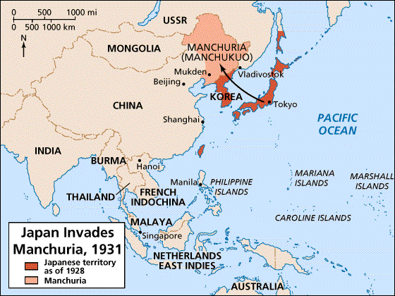
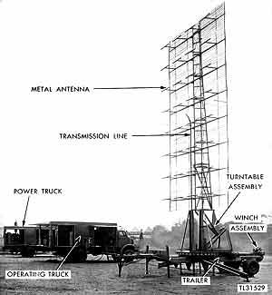

Pearl Harbor was a devastating day for the United States, to quote Franklin D. Roosevelt, “it is a day that will live in infamy.” The United States didn’t want to officially enter WWII. What pushed the US was the deadly attack on December 7th, 1941, Pearl Harbor. Pearl Harbor is a naval base located in the Pacific Ocean on the island of Hawaii in Honolulu. This was a seemingly unexpected attack as Pearl harbor is nearly 4,000 miles away from Japan.

On the morning of December 7th, at around 6 am, the first fleet of Japanese bomber planes lifted off of Japanese aircraft carriers. The first fleet was led by Mitsuo Fuchid, a Japanese pilot. When they reached the shores of Pearl Harbor, the Japanese began their nearly two hours of bombing the US base. Their main targets were repair shops and fuel reserves. Without the ability to repair damaged vehicles or fuel them, the base would have been rendered useless. To understand why the Japanese bombed Pearl Harbor, we have to look into the past.
Japan was a growing nation during the late 1800s and early 1900s. As they were growing, they were trying to establish themselves as a world power. They mirrored many western powers like the United States in the attempt to do so. The United States began to take notice when Japan started to expand towards China. What was happening was that Japan had conflicting interests associated with trade with Asian countries like China. Many of the conflicting interests were with natural resources found in some of these Asian countries. As Japan began to expand, they decided that in 1931, they were going to invade Manchuria. Manchuria is a region of North-East China that is rich in natural resources.
The attack of this region was successful for the Japanese. The Japanese held this region while other allied countries such as the US refused to acknowledge that they had taken it. During this time, the second World War was heating up. Germany occupied much of Europe and the United States began to lose focus on Japan as the occupation of Europe became bigger. By 1940, Japan started to make a bigger scene. The relationship between the United States and Japan began to take a turn. In July of 1940, the United States cut off essential supplies and materials to Japan like fuel, steel, and other things needed for war. Japan could survive for a few months on their fuel reserves, but eventually, they could not. As the United States began to put sanctions on things like oil, other countries began to too. As more countries participated in this, the impact on Japan grew. The reason why this was bad for Japan was that Japan’s oil was imported. It wasn’t a country like the United States who had oil available in their country. By doing this, the United States hoped that Japan would back down and leave some of these regions, but the actions by the United States only fueled the fire.
As the fire fueled up, an attack became undoubtedly certain. There began to be signs and warnings from Japan that they were going to strike back, but no one knew where. Pearl Harbor was ruled out due to distance. This was good for the Japanese because the surprise part of an attack would make the attack more successful. On a nearby island in Hawaii, the US military installed a new communication system, which included radar.
On the morning of December 7th, 1941, two guys named Joseph Lockard and George Elliot were manning the radar. The radar was typically kept on for a few hours in the morning to watch for irregularities, which happened that morning. George began to notice more planes showing up on the radar. When he notified Joseph, he brushed it off. He sought more information from a higher ranking officer who told him it was a USAF fleet of B-17s. Then disaster struck and as it always goes, Joseph Lockard was given the credit for noticing the planes even though Goerge saw and tried to warn others. If the warning was taken seriously, the soldiers stationed at Pearl Harbor may have been able to prepare for the attack. This could have meant there would have been far fewer casualties.
Overall, Pearl Harbor was a sad day in the history of the United States. Now, the world is in a much better place and the United States and Japan are on better terms. It’s interesting to know why the Japanese attacked. If they never attacked, would the US have entered the war later or could there have been something far worse.